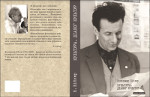

3-4 июля 2018 г. в Киеве состоялись круглый стол, посвященный столетию В.С. Библера, и презентация его книги В.Біблер. Культура. Діалог культур.
В Киеве вышел сборник статей В.Библера на украинском языке: В.Біблер. Культура. Діалог культур // Дух і літера. Приобрести

В журнале "Філософська думка" (Київ) опубликована статья Библера "ЦИВІЛІЗАЦІЯ І КУЛЬТУРА.Філософські роздуми у переддень XXI сторіччя"
В альманахе "Єгупець 27" опубликована статья Володимир Біблер "Культура і освіта. Роздуми у семи тезах"